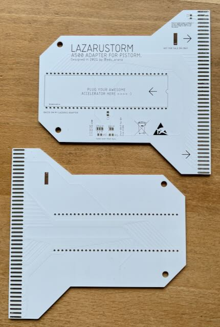
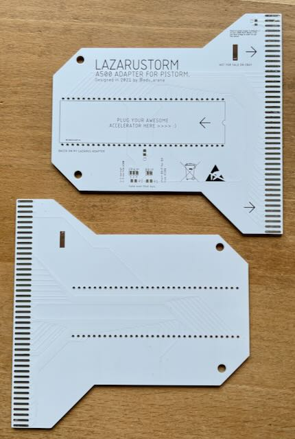
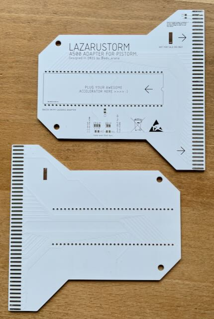

Mit diesem Adapter kann man eine externe CPU am Expansion Port des Amiga 500 anschließen, speziell auch den PiStorm Raspberry Pi CPU Emulator.

| Komponente | Anzahl | Preis | Anbieter |
| Platine | 1 | €11.60 | |
| 100nF Kondensator SMD 0805 | 1 | €0.02 | Reichelt |
| 22µF Kondensator SMD 0805 | 1 | €0.30 | Reichelt |
| 1kΩ Widerstand SMD 0805 | 1 | — | |
| 2x43 Edge Buchse | 1 | — | |
| 1x40 Buchsenleiste | 2 | €4.34 | Reichelt |
| M3 Schraube | 2 | — | |
| M3 Beilagscheibe | 2 | — | |
| M3 12mm Abstandhalter Buchse/Buchse | 2 | — | |
| nur Platine | €11.60 | ||
| Teilbausatz | €16.26 |